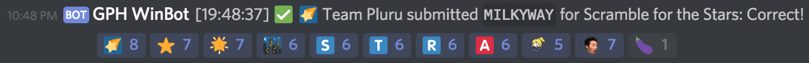
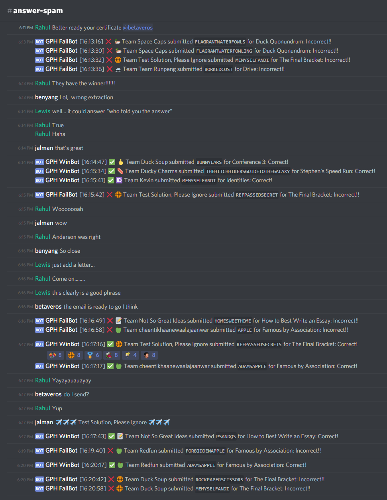
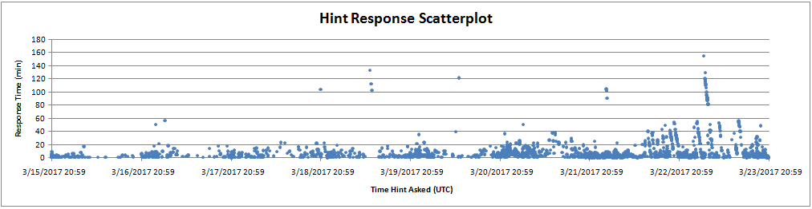
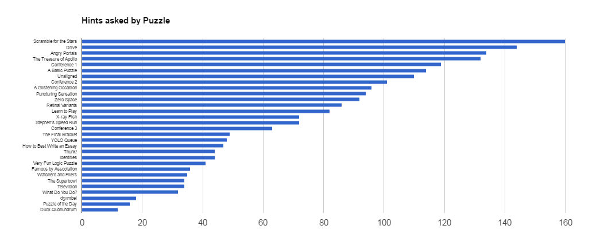
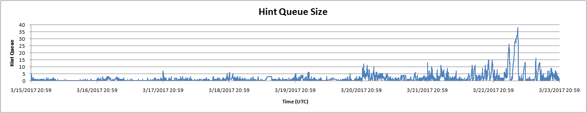

Congratulations to the top 4 teams, Duck Soup, Brown Herrings, Pluru, and Synod, who finished each of the 30 puzzles within 24 hours! Also, congratulations to Test Solution, Please Ignore for being the first team to solve the final meta, as well as the first team to finish all 5 metas.
The rest of this page will be a recap of the process of making this hunt, followed by some fun stats, so as a warning, there will be lots of puzzle spoilers. It’s also very long, so feel free to just skip to the fun stuff!
On the first day of the hunt, teams received a “mysterious note” from an anonymous source who had valuable intelligence on the secret strategies of the teams competing in the annual Puzzleball Championships. These strategies were obfuscated with puzzles (of course), so the source needed the team’s help in order to discover the strategies and use them to fill out a perfect bracket.
On the sixth day of the hunt, teams received another email from this source, informing them that the Puzzleball teams had split themselves up into three “conferences” (metas) each of which had decided to follow some group strategy. Furthermore, 9 of the 25 teams were going to be disqualified for an undetermined reason.
Teams needed to solve the Duck Quonundrum meta to discover which 9 teams were disqualified, and then solve enough of the conference metas to realize that the “secret strategies” were simply Rock, Paper, or Scissors. With this knowledge teams could then fill out the final bracket (our metameta) and extract the final answer REF PASSED SECRETS, which answered the question “how did you get this information in the first place?”.
Upon solving the metameta, teams were emailed the following message, accompanied with a personalized certificate:
Dear $TEAMNAME,
Thank you for informing us of the disturbing actions taken by one of our referees. The moment we received your phone call we launched a full-scale investigation into the matter and we quickly identified the individual responsible. Rest assured that he has been terminated. It appears that his goal was to steal confidential team documents in order to somehow predict the results of the Puzzleball tournament.
As a result, we’ve decided to cancel this year’s “Perfect Bracket” contest. This is not a decision we made lightly, but we value the integrity of this contest too much to take any other action. While our official rules prevent us from awarding you even a small monetary token of appreciation for your valuable tip-off, we hope that the attached certificate below should be a worthy prize on its own.
Sincerely, Ark Memmert, President of the PCAA (Puzzleball Championships Athletic Association)
The story begins with the 2017 MIT Mystery Hunt. Through a combination of an easier than normal hunt and a somewhat strengthened ✈✈✈ Galactic Trendsetters ✈✈✈, we finished about 24 hours after the hunt’s start. The shortened hunt left some of us with a desire to keep puzzling, so we decided to spend the next day or two constructing another round complete with a meta — what eventually became the Conference 3 meta.
We worked on it for most of Sunday, but in the end it was clear that additional polish was needed to release it publicly. So, we saved what puzzles we had and polled our team members on our next step forward. Enough people expressed interest in creating a full-fledged hunt that we decided to get organized and start planning.
We picked the date early on, in order to pin down a deadline to work towards. Pi Day was both thematic (the MIT dorm our mystery hunt team is based around is called Floor Pi) and approximately midway between Mystery Hunt and MUMS, so we chose this date and worked backwards from it to create a schedule we tried to stick to.
We also considered our meta structure at this time. We wanted to make metas a small surprise for teams, so a suggestion early on that made it into the hunt was to release 5 days of regular puzzles and a final day of only metapuzzles. We wanted to smoothly integrate the meta we’d already created and tested, so we spent some time thinking about what we could do with Conference 3’s answer, BUNNY EARS.
Someone mentioned that it was the same hand-sign as SCISSORS in Rock Paper Scissors, and this inspired us to create a metameta that involved filling out a bracket resolved by RPS games. This in turn motivated our hunt theme: March Madness. To our pleasant surprise, March Madness began on Pi Day this year, which certainly sealed the deal for us.
The next few days, we considered answers suitable for the metameta. After some deliberation, we settled on the phrase REF PASSED SECRETS, since it succinctly captured the RPS theme and contained exactly 16 letters. In the meantime, we already had proposals for our Conference 1 (rock) and Conference 2 (paper) metas. It was fairly unconventional building the metameta around the metas, as opposed to the other way around, but in the end we were able to finagle the answers into the 16-team bracket with the desired extraction mechanism.
Finally, we now had 25 - 16 = 9 answers that weren’t used at all in our metameta. We considered simply telling teams which 9 teams were "disqualified", but we decided it would be nice to add another metapuzzle in which teams discovered this information for themselves. (This also preserved the nice property of releasing 5 puzzles every day).
We therefore had to write a metapuzzle in which all the feeder answers were pre-determined, but the final answer was basically unconstrained. A conundrum-style meta provided plenty of freedom within our constraints, and this eventually became the Duck Quonundrum meta.
Over the course of the six weeks leading up to this hunt, each puzzle was written, testsolved and revised (often several times), and then fact-checked. Our website was built from scratch with Django, and each puzzle and its solution was converted into HTML.
Most puzzles went through several iterations of revision and testsolving before making it into our hunt. We also scrapped a few puzzles in various stages of creation, including two other video game puzzles (we felt we had too many already) and another interactive game, which we thought was unfair to teams without programmers (if you’re interested, you can try out the puzzle here).
Our intention in puzzle ordering was, like the Australian hunts, to gradually dial up the difficulty over the course of the hunt, as well as to order the puzzles by difficulty within a day. (We were only partially successful on this point — for example, Zero Space and Thunk! having so many solves was a surprise.) We also tried to ensure that each day had at least one easier puzzle, and that the first day had all fairly accessible puzzles.
We knew that Scramble for the Stars was likely to be the hardest regular puzzle in our hunt, but we intentionally put it on Day 3 because it is particularly backsolvable from both the DQ and Conference 2 metas (and perhaps even backsolvable with only the knowledge that some ingredients were substrings prior to Day 6). We didn’t want teams to be able to backsolve it without incurring a fairly large AAST penalty, to reward teams who solved it without meta knowledge. That said, we’re not inherently opposed to backsolving, and it was fully intended that teams could backsolve some of the harder puzzles once the meta structure was revealed.
We did almost all of our organization on a Discord server, with specific channels for everything from web design, to testsolving requests, to puzzle idea discussion. (We're still throwing around new ideas for puzzles in that last one!) To monitor the status of the hunt, we used webhooks to automatically inform us of team registrations, hint requests, and answer submissions.
We really enjoyed watching teams solve puzzles and submit answers in real-time:
 Our original intent in the hints and scoring is outlined in our FAQ. We spent a lot of time debating different alternatives, but basically the only thing we all agreed on is that it is impossible to make something that is fair to everyone. In the end, we chose a system that we hoped would be a good compromise, and now that the hunt is over, we have a number of thoughts about the result:
If we run this again in the future, we will likely use a different system. We're currently considering a hybrid system of hinting that might involve both Y/N questions and pre-written hints.
We also have some fun stats about the hint system:
We answered 2187 hints over the course of the hunt. Unsurprisingly, most of these hints were asked after we eventually removed the hint limit. Our median response time was 3.45 minutes, and our average response time was 8.2 minutes.
Scramble for the Stars was the most asked about puzzle, with 160 hints being asked. Duck Quonundrum was the least asked about puzzle, with 12 hints being asked.
Our average hint queue size was 1.534 unanswered hints. We had zero hints in the queue 53.1% of the time, and one hint in the queue 20.6% of the time. At peak, we had 38 hints in the queue (on the final evening of the hunt).
Even though our traffic statistics showed that most puzzlers were based in US timezones, many puzzlers appreciated that our scoring policy did not penalize teams as long as they solved within 24 hours, both for work schedule reasons and our overseas friends in other countries.
Nonetheless, our nonstandard scoring scheme introduced other issues, such as:
We already have some ideas for how to get around these issues, but it’s a tough problem which we’ll continue to think about.
Many teams enjoyed the moderate, spread-out pace at which puzzles were released, but we also heard (and felt) that the hunt went on for too long. Most of our team was exhausted after 8 days of answering hints and responding to emails. In retrospect, we would probably make our hunt shorter. However, many people aren't willing to spend an entire weekend working hard on our puzzles; a four- or five-day hunt ending on a Sunday might give a good balance between these two preferences.
According to our feedback form, 48% of people agreed with the statement "I wanted more easy puzzles in the hunt". 58% of people agreed with "I wanted more medium puzzles", and only 7% of people agreed with "I wanted more hard puzzles" (while 63% disagreed). Clearly, many teams were not satisfied with the number of approachable puzzles in the hunt. However, we received extremely favorable responses for the questions "The puzzles in this hunt were fun" and "The puzzles in this hunt were creative" (87% and 93% agreed, respectively) so we're somewhat hesitant to think that a large shift towards easy puzzles is the right thing to do.
We feel that this problem can be best addressed through format. Hard puzzles aren't for every team, but this hunt's format wasn't great at guiding teams to the puzzles that were appropriate for them. Many teams told us that they were thrilled to finally get past a step of a puzzle, only to find that they had to do another layer to get to the answer, which could be demotivating.
Two ideas that may improve these teams' experiences are moving closer towards a Mystery Hunt-style of unlocks (where harder puzzles are "gated" behind easier ones), and difficulty ratings for each puzzle.
Here’s some fun items we created and compiled over the course of the hunt:
Here are some fun statistics:
Puzzle Authors: Josh Alman, Abby Caron, Brian Chen, Lewis Chen, Lennart Jansson, Maxwell Johnson, Chris Jones, DD Liu, Colin Lu, Seth Mulhall, Brendan Ney, Nathan Pinsker, Jon Schneider, Rahul Sridhar, Anderson Wang, Ben Yang, Patrick Yang, Lucy Zhang
Web Developers: Brian Chen, Mitchell Gu, Lennart Jansson, Chris Jones
Additional Test Solvers and Fact Checkers: Phillip Ai, Danny Bulmash, Lilly Chin, Katie Dunn, Alex Irpan, Damien Jiang, Max Murin, Jakob Weisblat, Patrick Xia, Dai Yang, Jingyi Zhao
{kind=link}